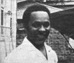

Selected doin's of well-known MOTHER-types from around the world.
ROBERT BLAKE AND JACKSON BROWNE
The Abalone Alliance-a grassroots coalition of more than 60 antinuclear/safe-energy groups-sent out a call, this past September, to mobilize the blockade/encampment of the Diablo Canyon nuclear power plant site in San Luis Obispo, California. The alert was issued upon the approval (by the Nuclear Regulatory Commission) of the Pacific Gas and Electric Company's scheduled test run of one of the plant's two reactors . . . which are located near a geological fault.
Prominent among the more than 3,000 antinuke activists who convened at Diablo Canyon (just days before the tests were scheduled to begin) were rock star Jackson Browne and actor Robert (Baretta) Blake. The protesters were split into small "affinity groups", each instructed to determine its own means of approach to the site. Blake's unit opted to ferry ashore in rubber boats. Meanwhile, Browne and the members of his troupe broached the plant gate and were promptly carted off to jail. When the first week of the siege had ended, more than 1,500 arrests had been made.
Although the 435-acre plant was defended by the San Luis Obispo Sheriff's Department, the California Highway Patrol, the National Guard, and the Coast Guard, belligerent confrontations were almost nonexistent. Nonviolence workshops, conducted by the alliance, instructed participants not to launch either physical or verbal attacks, damage property, bring or use drugs or alcohol, or carry weapons . . . and the precautions proved largely successful. Nevertheless, it was clear that the protest was not meant to be merely a symbolic one: Blockade organizers have vowed to do everything in their power to obstruct operation of the plant.-JV.
John Osborne-who serves as both Chief Minister and Minister of Finance of the tiny Caribbean island of Montserrat-has been working to make his homeland completely food self-sufficient. During his trips abroad the former Minister of Agriculture keeps a constant lookout for fruits and vegetables that might thrive on the island . . . and over the past decade he's returned home bearing sweet potatoes, mangoes, yams, papayas, and several varieties of pumpkin. Osborne then experiments with the imported crops on his own farmland . . . encouraging islanders to take slips from the plants that flourish to replant on their acreage.
Montserrat's fertile volcanic soil and growing fishing industry give the 45-year-old Chief Minister reason to be optimistic about achieving his goals. "If the rains are constant," Osborne speculates, "we should become self-sufficient in our production of fruits and vegetables within two years."
In addition to his political duties-which have included soliciting volunteer experts from Canada, Great Britain, and the United States to teach the islanders improved farming and fishing techniques-the statesman has managed to find time to improve the design and construction of the island's seafaring vessels . . . and his talent has helped to enlarge Montserrat's fishing fleet.
The islanders sometimes have mixed feelings when they see their Chief Minister, in blue jeans and a T-shirt, laboring in the fields: "A lot of people still view farming as degrading," Osborne explains, "because our ancestors were once forced to perform agricultural tasks as plantation slaves. Perhaps if they see me working the land, it will encourage a change in attitude . . . and help to demonstrate the value of farming."-Gene Ulansky.
SENATOR JOHN H. CHAFEE AND CONGRESSMAN THOMAS B. EVANS, JR.
A bill has been introduced, in both houses of Congress, which could save taxpayers millions of dollars while discouraging the devastation of one of the nation's diminishing natural resources: our barrier islands. The legislation-designated S. 1018 in the Senate and H.R. 3252 in the House-was authored by Congressman Thomas B. Evans, Jr. (R-Del.) and Senator John H. Chafee (R.R.I.) . . . in an attempt to curb development of the 300 islands that dot the U.S. coast from Maine to Texas, protecting the shoreline from destructive winds.
Barrier islands defend themselves against the elements by means of their constantly changing topography-a result of the seasonal shift of surface sands-which makes building on the huge sandbars a very costly (and risky) proposition. In the past, however, private enterprise has managed to meet this burdensome expense with the help of the federal government's financial contributions to island flood insurance . . . building loans . . . and road, bridge, and sewer construction. As development of the areas has increased, newly built antierosion structures-which interfere with the islands' natural surface alteration-have caused their beaches to literally wash away . . . destroying the adjacent lagoons and wetlands that have long supplied both food and shelter for countless marine organisms and migratory birds.
Senator Chafee and Representative Evans aim to put the reins on that environmental destruction: The major provisions of their legislation are [1] the establishment of a coastal barrier resources system, consisting of undeveloped barrier islands, beaches, and spits on the Atlantic and Gulf coasts and [2] the prohibition of new federal expenditures, within the system, for all purposes except aid for energy and national-security activities, air and water navigation, and fish and wildlife protection.
On July 31, 1981 the House and Senate ruled on one of the most controversial elements of the Chafee-Evans legislation: As part of the 1982 Budget Reconcil. iation Bill, federally funded flood insurance for undeveloped barrier islands and beaches will be eliminated after October 1, 1983. Those who wish to encourage Congress to finish the job should contact their senators and representatives and ask them to cosponsor the Chafee-Evans Coastal Barrier Resources Act.-JV.
IN BRIEF...
The opening of the Institute for Resource Management-a graduate school of environmental studies initiated by actor and director ROBERT REDFORD (which was announced in Newsworthies, issue 71)-has been postponed until the fall of 1982, in order to allow fund-raisers to accumulate the school's $5 million endowment .... A new book by Country Journal editor RICHARD M. KETCHUM has recently been published. Second Cutting: Letters From the Country (Viking Press, $13.95) is a hardcover collection of the author's short essays which have traditionally introduced each issue of the magazine .... TED KNIGHT (star of television's Too Close for Comfort ) and his wife DOROTHY are enthusiastic advocates of natural foods, exercise, and wholistic living. Both actively support the work of the Price-Pottenger Foundation, an organization which Ted publicized during his appearance on the syndicated educational TV series Viewpoint on Nutrition.... Former governor of Washington DIXY LEE RAY is currently living on a 65-acre farm, where she and her sister keep 22 hens, four goats, three sheep, two roosters, and a hive of bees (not to mention four dogs and seven cats).-JV.
|
 |
|
|